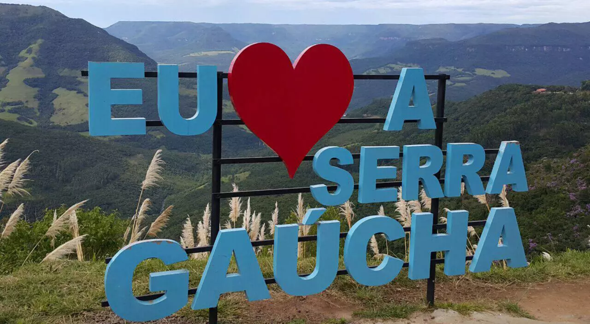
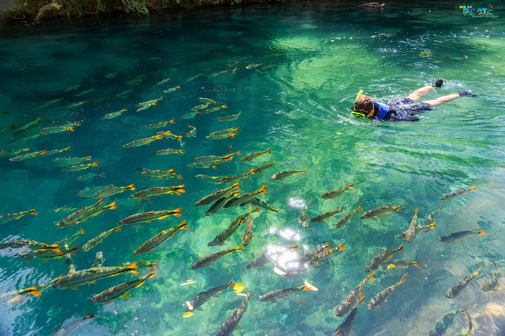

Praia · Dunas
01
Jericoacoara
Ceará · Nordeste
Roteiros curados a dedo para quem busca o Brasil autêntico — das dunas do Nordeste aos cânions do Sul, passando pelas ruas de pedra e vilarejos esquecidos pelo tempo.


Cinco roteiros cuidadosamente desenhados para imergir na cultura, paisagem e gastronomia local.




Acreditamos que as melhores viagens acontecem longe das listas de "imperdíveis". Nossos roteiros privilegiam o encontro com pessoas, sabores que só existem em uma esquina específica, e paisagens que exigem tempo para se revelar.
Cada destino é visitado pessoalmente pela nossa equipe antes de entrar no catálogo. Trabalhamos com pousadas de família, guias nativos e produtores locais — porque turismo responsável começa na raiz.
Se você procura pacotes genéricos, não somos para você. Se procura uma viagem que será lembrada por anos, seja bem-vindo à Rota Sul.
Conte-nos sobre a viagem dos seus sonhos. Montamos um roteiro personalizado em até 48 horas, sem compromisso.
Planejar minha viagem